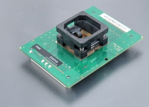
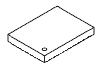
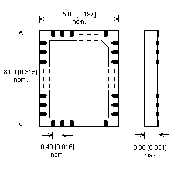

AP3 QFN52-2.02 LT-1
(Ord. no. 73-6581)
Preis: 541,00 € zzgl. MwSt.
- Spezialmodul für Analog Devices/Linear Technology LTC3888-Geräte im QFN52-Gehäuse
- Betriebsgarantie (mechanisch) für ZIF-Sockel – 10.000 Betätigungen
- Unterstützt von PG4UW-Softwareversion 3.85c
- Hergestellt in der Slowakei
| Ord. no. | 73-6581 |
| Socket | ZIF QFN52, OpenTop type |
| Bottom | 2 connectors by 68 pins, receptacle type |
| Class | Specialized |
| Subclass | other |

Adapter-Handbuch
- Das Programmiergerät muss nicht ausgeschaltet werden und die Software kann während des Einführens/Entfernens des Programmiermoduls ausgeführt werden
- Schützen Sie die Kontakte der Modulanschlüsse und des ZIF-Sockels vor Verunreinigungen. Schmutz und/oder Fett auf den Kontakten können zu Fehlern bei der Programmierung führen.
- Gehen Sie vorsichtig vor! Das falsche Einsetzen des Geräts in den ZIF-Sockel des Moduls kann zu Schäden am programmierten Gerät führen.
- Lösen Sie die Rändelschraube. Stecken Sie das Programmiermodul in die Programmiermodul-Schnittstellenanschlüsse, bis es einrastet. Aufgrund der Form der Anschlüsse ist nur eine Ausrichtung und Position des Programmiermoduls in den Programmiermodul-Schnittstellenanschlüssen möglich. Schrauben Sie die Rändelschraube fest, um das Programmiermodul am Programmierer zu befestigen.
- Drücken Sie auf die Abdeckung des ZIF-Sockels des Moduls (das oberste bewegliche Teil), um den Sockel zu öffnen. Setzen Sie das Gerät in den ZIF-Sockel des Moduls ein. Die korrekte Position des programmierten Geräts im ZIF-Sockel des Moduls wird durch das Bild neben dem ZIF-Sockel des Moduls (normalerweise links) angezeigt. Auf diesem Bild wird die Referenzecke des Geräts (z. B. die Position von Pin 1) durch einen Punkt, die Zahl 1, eine abgeschrägte Ecke oder eine beliebige Kombination der genannten Elemente angezeigt. Lassen Sie dann die ZIF-Buchse des Moduls los.
- Die Abdeckung muss vollständig betätigt (gedrückt) werden, bevor ein Gerät in die Buchse eingesetzt wird. Wenn das Gerät in eine nur teilweise geöffnete ZIF-Buchse eingesetzt wird, können die Pins des Geräts nach dem Lösen der Abdeckung beschädigt werden.
- Drücken Sie nicht auf das Gerät, während Sie es einsetzen und/oder die Abdeckung lösen.
- Überprüfen Sie visuell die Platzierung des programmierten Geräts in der ZIF-Buchse des Moduls. Wenn alles in Ordnung aussieht, ist das Gerät bereit für die Programmierung.
- Um das Gerät aus dem Modul zu entfernen, drücken Sie auf die Abdeckung des ZIF-Sockels des Moduls und entfernen Sie das Gerät.
- Wenn Sie die Arbeit mit dem Modul abgeschlossen haben, lösen Sie die Rändelschraube und entfernen Sie das Modul von den Programmiermodul-Schnittstellenanschlüssen.
- Betriebsbedingungen: Temperatur 5 °C ÷ 40 °C (41 °F ÷ 104 °F), Luftfeuchtigkeit 20 % ÷ 80 % nicht kondensierend
Gehäuse
QFN52


Geeignet für Programmer
Hinweis: Dieser Programmieradapter / Modul unterstützt möglicherweise nicht alle Geräte in den oben genannten Paketen auf Ihrem Programmiergerät. Bitte überprüfen Sie die Situation für bestimmte Geräte, mit denen Sie arbeiten möchten, anhand der aktuellen Geräteliste Ihres Programmiergeräts.